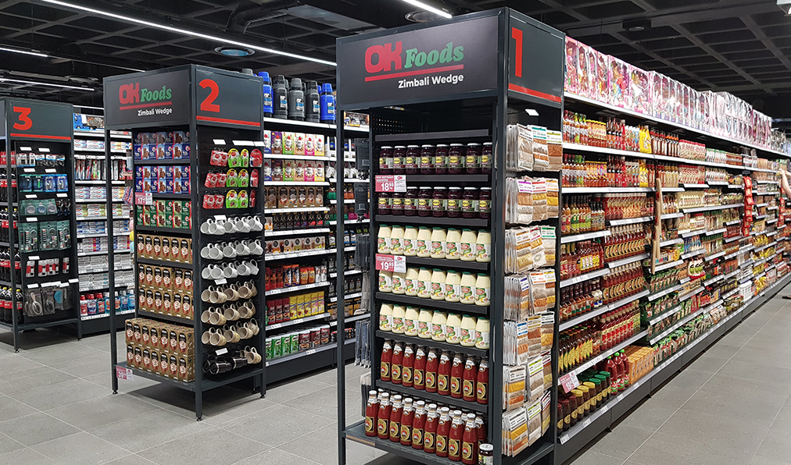
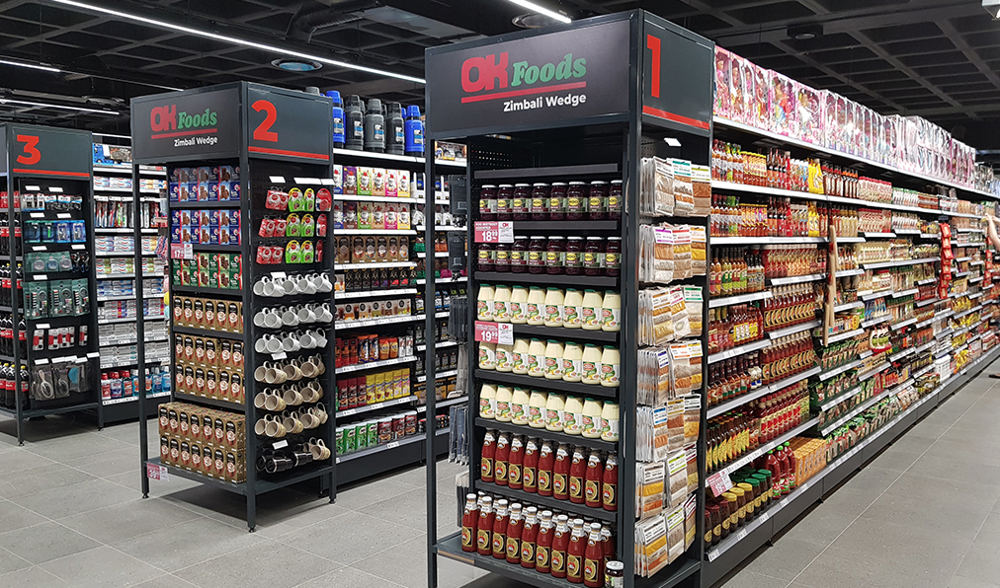

About us: Experience convenience and value at OK Grocer, your local supermarket offering a wide range of quality products at affordable prices. From fresh produce and everyday essentials to household goods and pantry staples, OK Grocer provides everything you need for your weekly shopping under one roof. With a focus on affordability and customer satisfaction, OK Grocer is committed to making your shopping experience enjoyable and budget-friendly.
Working Hours:
OK Grocer is known for its great deals, regular specials, and friendly service. The store's well-stocked shelves feature a mix of local and international brands, catering to a variety of tastes and preferences. In addition to groceries, OK Grocer also offers freshly baked bread, a butchery section, and a variety of frozen foods. With helpful staff and a convenient location, OK Grocer ensures a hassle-free shopping experience for all your grocery needs.